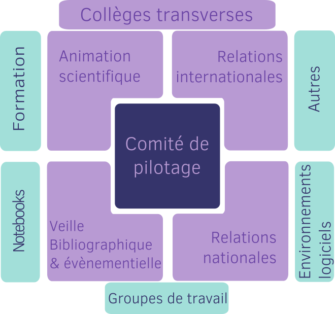

Structure du réseau
Organisation actuelle

Comité de pilotage
Coordination du comité
 Céline Acary-Robert
Céline Acary-Robert
LJK / GRICAD |
 Gloria Gonzalez Curto
Gloria Gonzalez Curto
Chargée de projet |
 Frédéric Lemoine
Frédéric Lemoine
Institut Pasteur |
Membres
Le comité de pilotage actuel est composé des membres suivants:
-
 Sarah Cohen-Boulakia
— Laboratoire Interdisciplinaire des Sciences du Numérique
Sarah Cohen-Boulakia
— Laboratoire Interdisciplinaire des Sciences du Numérique
-
 Raphaëlle Krummeich
— Laboratoire IDEES UMR6266
Raphaëlle Krummeich
— Laboratoire IDEES UMR6266
-
 Arnaud Legrand
— LIG
Arnaud Legrand
— LIG
-
 Dominique Muller
— Laboratoire Interuniversitaire de Psychologie
Dominique Muller
— Laboratoire Interuniversitaire de Psychologie
-
 Sébastien Rey-Coyrehourcq
— Laboratoire IDEES UMR6266
Sébastien Rey-Coyrehourcq
— Laboratoire IDEES UMR6266
-
 François Ric
— Laboratoire de Psychologie UR 4139
François Ric
— Laboratoire de Psychologie UR 4139
-
 Nicolas P. Rougier
— Institute of Neurodegenerative Diseases
Nicolas P. Rougier
— Institute of Neurodegenerative Diseases
Collèges
Les collèges transverses sont articulés autour de 4 thématiques :
- Relations européennes : liens et organisations d’évènements communs avec les autres réseaux européens
- Animation scientifique : organisation de séminaires et wébinaires autour de la reproductibilité
- Relations institutionnelles et administratives : lien avec les différentes institutions de recherche françaises
- Veille bibliographique et évènementielle : assurer la veille bibliographique mais également des conférences en lien avec la reproductibilité
Groupes de travail
Les groupes de travail, sont organisés autour d’une thématique précise et ont pour but de définir et diffuser les bonnes pratiques pour une science reproductible dans leur périmètre :
- GT Formation
- GT développement logiciel : n’hésitez pas à rejoindre en vous abonnant à la liste de diffusion.
- GT Contrôle qualité des échantillons biologiques Le GT notebook est un GT autour les enjeux et problématiques du Notebook, pris comme un objet complexe au sein du cycle des données de la recherche. Il n’est pas directement un GT du réseau mais nous entretenons des collaborations étroites.